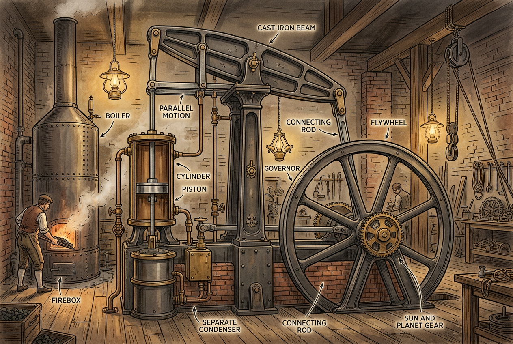
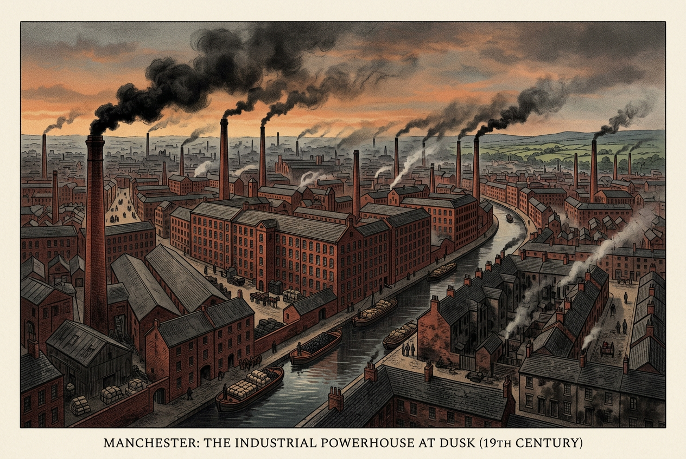
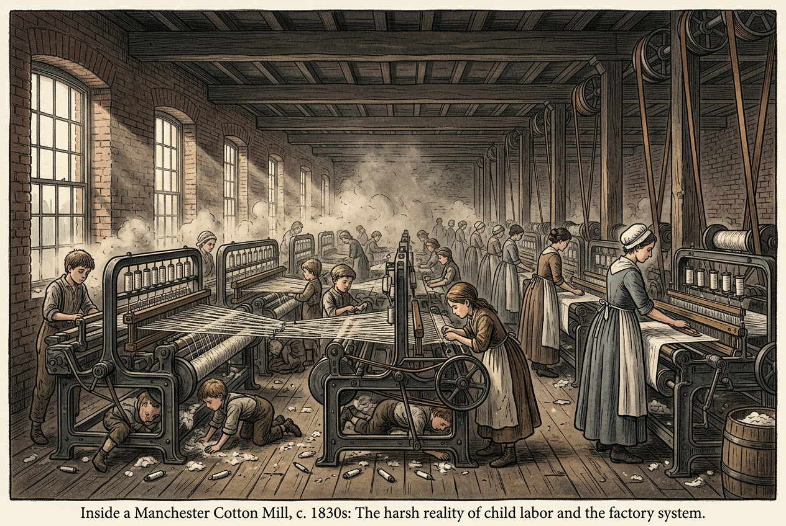

18世纪60年代—19世纪中期，人类生产方式的根本变革

"从那时起，世界被改变了。煤炭和钢铁取代了木材和肌肉，蒸汽机取代了手工劳动。人类进入了一个全新的时代。"
——后世史学家对工业革命的评价

点击地图上的任意标记，了解它如何推动工业革命。试着找齐 5 个要素！
工业革命不是单一发明造成的，而是5大条件在英国同时具备，才引爆了生产力革命。让我们逐一分析：
18世纪英国农业改良，圈地运动使大量农民失去土地，被迫进入城市成为自由劳动力——为工厂提供了充足的雇佣工人。
农业效率提高 → 剩余劳动力出现 → 农民进城务工 → 工厂有了工人
英国通过殖民扩张和海外贸易，积累了大量资本，同时获得了廉价原料（棉花）和广阔市场——工厂主有资金建厂，有地方卖产品。
殖民掠夺 + 海外贸易 → 资本积累 → 有钱投资建厂 → 有市场消化产品
英国煤炭储量丰富且靠近地表，廉价能源为蒸汽机提供了燃料基础。同时英国海岸线长，河流众多，水力和海运便利。
煤炭丰富 → 蒸汽机有燃料 → 工厂不依赖水力 → 可以建在任何地方
1688年光荣革命后，英国政治长期稳定，君主立宪制保护了私有财产和专利权利——发明者的利益有保障，激发了技术创新的积极性。
政治稳定 → 专利法保护发明 → 发明可以赚钱 → 更多人投身技术创新
英国有经验主义科学传统，工匠和科学家乐于将理论应用于实际生产——这不是"纯科学"，而是"能用的科学"。
科学理论 + 工匠经验 → 技术发明 → 应用于生产 → 提高效率
| 条件 | 作用 | 如果缺失？ |
|---|---|---|
| 劳动力 | 提供工厂工人 | 工厂没人干活 |
| 资本 | 提供建厂资金 | 有技术没钱投产 |
| 能源 | 提供动力燃料 | 机器没动力来源 |
| 制度 | 保护发明激励 | 没人愿意搞发明 |
| 科学 | 提供技术基础 | 发明缺乏理论指导 |
"英国是幸运的——它同时拥有了煤炭、殖民地、稳定的政府和一群痴迷于改进机械的人。这些条件单独出现在其他国家，但从未像在英国这样同时具备。"
——经济史学家 David Landes
点击"启动 / 暂停"，观察蒸汽如何推动活塞做功，活塞又如何带动飞轮旋转——这就是 250 年前改变世界的机器原理。
🔴 红色区域 = 燃烧的煤； 🔵 蓝色线 = 蒸汽流动路径； 🟡 黄色部件 = 活塞做功冲程； 🟢 绿色飞轮 = 最终输出动力。
一张图看懂"生产力爆发"到底有多夸张——110 年间，英国每年消耗的棉花从 3 百万磅 涨到 10 亿磅，增长了约 300 倍。点击曲线上的历史事件节点，看看每次跳跃背后是谁在推动。
📚 数据来源：Deane & Cole《British Economic Growth 1688—1959》、Mitchell《British Historical Statistics》
工业革命不是一夜之间发生的，而是一系列关键发明逐步推进的结果。点击下面的卡片，了解每项发明的年代、发明者和历史意义：
请将下面的发明按时间先后顺序拖拽排列（最早在上，最晚在下）：

工业革命是人类历史的重大转折点，但它既不是"纯好事"，也不是"纯坏事"——我们需要用多元视角来评价：
| 领域 | 具体变化 | 历史意义 |
|---|---|---|
| 生产力 | 机器生产取代手工劳动，产量爆炸式增长 | 人类摆脱"马尔萨斯陷阱"（粮食增长赶不上人口） |
| 社会结构 | 工业资产阶级和无产阶级诞生 | 现代社会阶级格局的形成 |
| 城市化 | 工厂集中→城市迅速扩张 | 现代城市文明的基础 |
| 交通通讯 | 铁路、电报、轮船的出现 | 世界市场形成，全球化起步 |
| 生活方式 | 商品丰富、物价下降、时间观念强化 | 现代生活方式的雏形 |
| 领域 | 具体问题 | 历史影响 |
|---|---|---|
| 工人处境 | 工时长（12-16小时）、工资低、无保障 | 催生工人运动与马克思主义 |
| 童工问题 | 儿童在危险环境中工作，无受教育机会 | 推动后来劳工立法改革 |
| 城市问题 | 住房拥挤、卫生恶劣、传染病流行 | 现代城市规划的起源动力 |
| 环境破坏 | 煤炭大量燃烧，空气和水源污染 | 现代环境问题的历史根源 |
| 殖民扩张 | 工业国为掠夺原料和市场加强殖民 | 亚非拉地区被卷入资本主义体系 |
"我6岁就进纺织厂做工，每天工作14小时。车间里煤尘弥漫，机器没有防护罩，我的手指被轧断了两根。但我别无选择——家里需要我赚的每一便士。"
——英国纺织厂童工 玛丽·史密斯（时年12岁）
"工业革命让英国在50年里的生产力增长，超过了此前人类历史的总和。但它也让一代工人在血汗工厂里付出了代价。进步从来不是没有代价的。"
——经济史学家 阿诺德·汤因比
史料一分析：反映了工业革命时期童工问题的严重性——低龄化、超时劳动、危险环境、无劳动保障。根本原因：资本追求利润最大化 + 缺乏劳动立法保护 + 大量贫困家庭需要儿童补贴家用。
史料二分析：体现了"历史辩证法"评价原则——既要看到工业革命的巨大进步性（生产力飞跃），也要看到其代价（工人阶级的苦难）。这种"双重评价"是历史思维的核心。
相似点思考方向：
不同点思考方向：
参考答案思路：
"双刃剑"指工业革命既有巨大进步意义，也有严重负面后果：
这三句话浓缩了三种看待工业革命的视角，读懂它们，你就读懂了这段历史的复杂性。
"工业革命是人类继农业革命之后最伟大的经济转折点，它彻底改变了地球的面貌与人类的命运。"
——斯塔夫里阿诺斯《全球通史》
"为何是英国？因为这里同时具备了科学传统、产权保护、市场规模和精英的求知精神——其他国家只有其中两三项。"
——乔尔·莫基尔《工业革命：历史反思》
"工厂制度的产生，使工人成为机器的附属品。当机器开动时，工人只是它的活体零件。"
——马克思《资本论》第一卷（改写）
💡 课堂讨论：这三位学者从不同立场出发，但都在说同一件事——工业革命既是进步也是痛苦。你的答案会更倾向哪一位的视角？为什么？